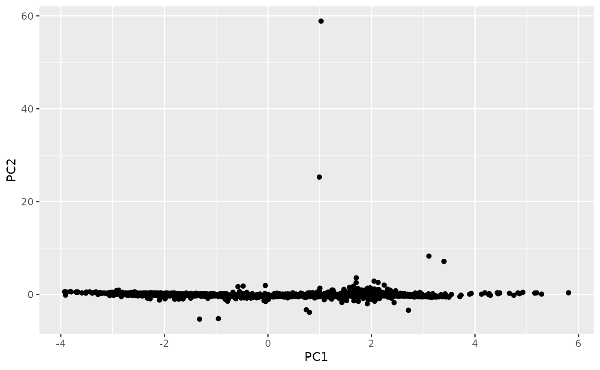
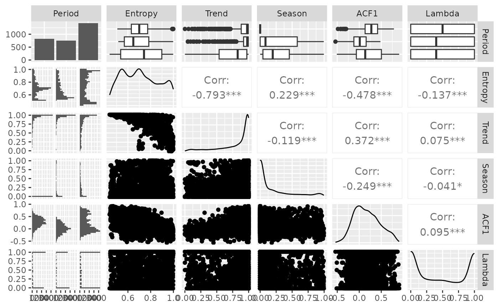
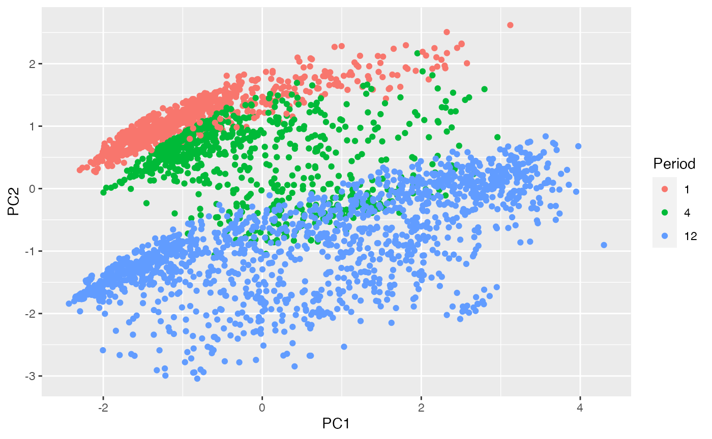

tsfeatures.RmdThe R package tsfeatures provides methods for extracting various features from time series data.
The stable version on R CRAN and can be installed in the usual way:
install.packages("tsfeatures")You can install the development version from Github with:
The function tsfeatures() computes a tibble of time series features from a list of time series.
mylist <- list(sunspot.year, WWWusage, AirPassengers, USAccDeaths)
tsfeatures(mylist)
#> # A tibble: 4 x 20
#> frequency nperiods seasonal_period trend spike linearity curvature e_acf1
#> <dbl> <dbl> <dbl> <dbl> <dbl> <dbl> <dbl> <dbl>
#> 1 1 0 1 0.125 2.10e-5 3.58 1.11 0.793
#> 2 1 0 1 0.985 3.01e-8 4.45 1.10 0.774
#> 3 12 1 12 0.989 2.12e-8 11.0 1.10 0.552
#> 4 12 1 12 0.796 9.67e-7 -2.13 2.85 0.250
#> # … with 12 more variables: e_acf10 <dbl>, entropy <dbl>, x_acf1 <dbl>,
#> # x_acf10 <dbl>, diff1_acf1 <dbl>, diff1_acf10 <dbl>, diff2_acf1 <dbl>,
#> # diff2_acf10 <dbl>, seasonal_strength <dbl>, peak <dbl>, trough <dbl>,
#> # seas_acf1 <dbl>The default functions that tsfeatures uses to compute features are frequency, stl_features, entropy and acf_features. Each of them can produce one or more features. Detailed information of features included in the tsfeatures package are described below. Functions from other packages, or user-defined functions, may also be used.
# Function from outside of tsfeatures package being used
is.monthly <- function(x){
frequency(x) == 12
}
tsfeatures(mylist, features = "is.monthly")
#> # A tibble: 4 x 1
#> is.monthly
#> <dbl>
#> 1 0
#> 2 0
#> 3 1
#> 4 1The spectral entropy is the Shannon entropy \[
-\int^\pi_{-\pi}\hat{f}(\lambda)\log\hat{f}(\lambda) d\lambda,
\] where \(\hat{f}(\lambda)\) is an estimate of the spectral density of the data. This measures the “forecastability” of a time series, where low values indicate a high signal-to-noise ratio, and large values occur when a series is difficult to forecast.
entropy(AirPassengers)
#> entropy
#> 0.2961049Stability and lumpiness are two time series features based on tiled (non-overlapping) windows. Means or variances are produced for all tiled windows. Then stability is the variance of the means, while lumpiness is the variance of the variances.
These three features compute features of a time series based on sliding (overlapping) windows. max_level_shift finds the largest mean shift between two consecutive windows. max_var-shift finds the largest variance shift between two consecutive windows. max_kl_shift finds the largest shift in Kulback-Leibler divergence between two consecutive windows. Each feature returns a vector of 2 values: the size of the shift, and the time index of the shift.
max_level_shift(AirPassengers)
#> max_level_shift time_level_shift
#> 54.5 117.0
max_var_shift(AirPassengers)
#> max_var_shift time_var_shift
#> 2342.152 107.000
max_kl_shift(AirPassengers)
#> max_kl_shift time_kl_shift
#> 0.1210444 122.0000000crossing points are defined as the number of times a time series crosses the median line.
crossing_points(AirPassengers)
#> crossing_points
#> 7flat_spots are computed by dividing the sample space of a time series into ten equal-sized intervals, and computing the maximum run length within any single interval.
flat_spots(AirPassengers)
#> flat_spots
#> 18We use a measure of the long-term memory of a time series (hurst), computed as 0.5 plus the maximum likelihood estimate of the fractional differencing order \(d\) given by Haslett & Raftery (1989). We add 0.5 to make it consistent with the Hurst coefficient. Note that the fractal dimension can be estimated as \(D = 2 - \text{hurst}\).
hurst(AirPassengers)
#> hurst
#> 0.9992466unitroot_kpss is a vector comprising the statistic for the KPSS unit root test with linear trend and lag one, and unitroot_pp is the statistic for the “Z-alpha” version of PP unit root test with constant trend and lag one.
unitroot_kpss(AirPassengers)
#> [1] 2.739474
unitroot_pp(AirPassengers)
#> [1] -6.565597stl_features Computes various measures of trend and seasonality of a time series based on an STL decomposition. The mstl function is used to do the decomposition.
nperiods is the number of seasonal periods in the data (determined by the frequency of observation, not the observations themselves) and set to 1 for non-seasonal data. seasonal_period is a vector of seasonal periods and set to 1 for non-seasonal data.
The size and location of the peaks and troughs in the seasonal component are used to compute strength of peaks (peak) and strength of trough (trough).
The rest of the features are modifications of features used in Kang, Hyndman & Smith-Miles (2017). We extend the STL decomposition approach (Cleveland et al.1990) to handle multiple seasonalities. Thus, the decomposition contains a trend, up to \(M\) seasonal components and a remainder component: \[ x_t=f_t+s_{1,t}+\cdots+s_{M.t}+e_t, \] where \(f_t\) is the smoothed trend component, \(s_{i,t}\) is the \(i\)th seasonal component and \(e_t\) is a remainder component. The components are estimated iteratively. Let \(s^{(k)}_{i,t}\) be the estimate of \(s_i,t\) at the \(k\)th iteration, with initial values given as \(s^{(0)}_{i,t}=0\). The we apply an STL decomposition to \(x_t-\sum^{j=1}_{j\neq1}{}^{^{M}}s^{k-1}_{j,t}\) to obtained updated estimates \(s^{(k)}_{i,t}\) for \(k=1,2,\ldots\). In practice, this converges quickly and only two iterations are required. To allow the procedure to be applied automatically, we set the seasonal window span for STL to be 21 in all cases. For a non-seasonal time series, we simply estimate \(x_t=f_t+e_t\) where \(f_t\) is computed using Friedman’s “super smoother” (Friedman 1984).
Strength of trend (trend) and strength of seasonality (seasonal.strength) are defined as \[
\text{trend} = 1-\frac{\text{Var}(e_t)}{\text{Var}(f_t+e_t)}\quad \text{and}\quad \text{seasonal.strength}=1-\frac{\text{Var}(e_t)}{\text{Var}(s_{i,t}+e_t)}.
\] If their values are less than 0, they are set to 0, while values greater than 1 are set to 1. For non-seasonal time series seasonal.strength is 0. For seasonal time series, seasonal.strength is an M-vector, where M is the number of periods. This is analogous to the way the strength of trend and seasonality were defined in Wang, Smith & Hyndman (2006), Hyndman, Wang & Laptev (2015) and Kang, Hyndman & Smith-Miles (2017).
spike measures the “spikiness” of a time series, and is computed as the variance of the leave-one-out variances of the remainder component \(e_t\).
linearity and curvature measures the linearity and curvature of a time series calculated based on the coefficients of an orthogonal quadratic regression.
We compute the autocorrelation function of \(e_t\), and e_acf1 and e_acf10 contain the first autocorrelation coefficient and the sum of the first ten squared autocorrelation coefficients.
stl_features(AirPassengers)
#> nperiods seasonal_period trend spike
#> 1.0000000 12.0000000 0.9886426 4.3879083
#> linearity curvature e_acf1 e_acf10
#> 1325.3880968 131.3883022 0.5515403 1.0783947
#> seasonal_strength peak trough
#> 0.9252932 7.0000000 11.0000000We compute the autocorrelation function of the series, the differenced series, and the twice-differenced series. acf_features produces a vector comprising the first autocorrelation coefficient in each case, and the sum of squares of the first 10 autocorrelation coefficients in each case.
acf_features(AirPassengers)
#> x_acf1 x_acf10 diff1_acf1 diff1_acf10 diff2_acf1 diff2_acf10
#> 0.9480473 5.6700871 0.3028553 0.4088376 -0.1910059 0.2507803
#> seas_acf1
#> 0.7603950We compute the partial autocorrelation function of the series, the differenced series, and the second-order differenced series. Then pacf_features produces a vector comprising the sum of squares of the first 5 partial autocorrelation coefficients in each case.
pacf_features(AirPassengers)
#> x_pacf5 diff1x_pacf5 diff2x_pacf5 seas_pacf
#> 0.9670971 0.2122454 0.2476615 -0.1354311holt_parameters Estimate the smoothing parameter for the level-alpha and the smoothing parameter for the trend-beta of Holt’s linear trend method. hw_parameters considers additive seasonal trend: ETS(A,A,A) model, returning a vector of 3 values: alpha, beta and gamma.
holt_parameters(AirPassengers)
#> alpha beta
#> 0.9998999495 0.0001000188
hw_parameters(AirPassengers)
#> alpha beta gamma
#> 0.9934803629 0.0001911792 0.0005800325The heterogeneity features measure the heterogeneity of the time series. First, we pre-whiten the time series to remove the mean, trend, and autoregressive (AR) information (Barbour & Parker 2014). Then we fit a \(GARCH(1,1)\) model to the pre-whitened time series, \(x_t\), to measure for autoregressive conditional heteroskedasticity (ARCH) effects. The residuals from this model, \(z_t\), are also measured for ARCH effects using a second \(GARCH(1,1)\) model.
arch_acf is the sum of squares of the first 12 autocorrelations of \(\{x^2_t\}\).garch_acf is the sum of squares of the first 12 autocorrelations of \(\{z^2_t\}\).arch_r2 is the \(R^2\) value of an AR model applied to \(\{x^2_t\}\).garch_r2 is the \(R^2\) value of an AR model applied to \(\{z^2_t\}\).The statistics obtained from \(\{x^2_t\}\) are the ARCH effects, while those from \(\{z^2_t\}\) are the GARCH effects. Note that the two \(R^2\) values are used in the Lagrange-multiplier test of Engle (1982), and the sum of squared autocorrelations are used in the Ljung-Box test proposed by Ljung & Box (1978).
heterogeneity(AirPassengers)
#> arch_acf garch_acf arch_r2 garch_r2
#> 0.2295944 0.2277382 0.2106310 0.2101623The nonlinearity coefficient is computed using a modification of the statistic used in Teräsvirta’s nonlinearity test. Teräsvirta’s test uses a statistic \(X^2=T\log(\text{SSE}1/\text{SSE}0)\) where SSE1 and SSE0 are the sum of squared residuals from a nonlinear and linear autoregression respectively. This is non-ergodic, so instead, we define it as \(10X^2/T\) which will converge to a value indicating the extent of nonlinearity as \(T\rightarrow\infty\). This takes large values when the series is nonlinear, and values around 0 when the series is linear.
nonlinearity(AirPassengers)
#> nonlinearity
#> 0.4238969arch_stat Computes a statistic based on the Lagrange Multiplier (LM) test of Engle (1982) for autoregressive conditional heteroscedasticity (ARCH). The statistic returned is the \(R^2\) value of an autoregressive model of order specified as lags applied to \(x^2\).
arch_stat(AirPassengers)
#> ARCH.LM
#> 0.9171945compengine calculate the features that have been used in the CompEngine database, using a method introduced in package kctsa.
The features involved can be grouped as autocorrelation, prediction, stationarity, distribution, and scaling, which can be computed using autocorr_features, pred_features, station_features, dist_features, and scal_features.
comp <- compengine(AirPassengers)
knitr::kable(comp)| x | |
|---|---|
| embed2_incircle_1 | 0.0000000 |
| embed2_incircle_2 | 0.0000000 |
| ac_9 | 0.6709483 |
| firstmin_ac | 8.0000000 |
| trev_num | -4902.1958042 |
| motiftwo_entro3 | 1.1302445 |
| walker_propcross | 0.2027972 |
| localsimple_mean1 | 2.0000000 |
| localsimple_lfitac | 3.0000000 |
| sampen_first | Inf |
| std1st_der | 33.7542815 |
| spreadrandomlocal_meantaul_50 | 13.9100000 |
| spreadrandomlocal_meantaul_ac2 | 38.9300000 |
| histogram_mode_10 | 125.0000000 |
| outlierinclude_mdrmd | 0.4166667 |
| fluctanal_prop_r1 | 0.7692308 |
embed2_incircle gives proportion of points inside a given circular boundary in a 2-d embedding space.
embed2_incircle(AirPassengers, boundary = 1e5)
#> [1] 0.2608696ac_9 is just the autocorrelation at lag 9, included here for completion and consistency.
ac_9(AirPassengers)
#> [1] 0.6709483firstmin_ac returns the time of first minimum in the autocorrelation function.
firstmin_ac(AirPassengers)
#> [1] 8firstzero_ac returns the first zero crossing of the autocorrelation function.
firstzero_ac(AirPassengers)
#> [1] 52trev_num returns the numerator of the trev function of a time series, a normalized nonlinear autocorrelation. The time lag is set to 1.
trev_num(AirPassengers)
#> [1] -4902.196Local motifs in a binary symbolization of the time series. Coarse-graining is performed. Time-series values above its mean are given 1, and those below the mean are 0. motiftwo_entro3 returns the entropy of words in the binary alphabet of length 3.
motiftwo_entro3(AirPassengers)
#> [1] 1.130244binarize_mean converts an input vector into a binarized version. Time-series values above its mean are given 1, and those below the mean are 0.
str(binarize_mean(AirPassengers))
#> num [1:144] 0 0 0 0 0 0 0 0 0 0 ...Simulates a hypothetical walker moving through the time domain. The hypothetical particle (or ‘walker’) moves in response to values of the time series at each point. The walker narrows the gap between its value and that of the time series by 10. walker_propcross returns the fraction of time series length that walker crosses time series.
walker_propcross(AirPassengers)
#> [1] 0.2027972Simple predictors using the past trainLength values of the time series to predict its next value. localsimple_taures returns the first zero crossing of the autocorrelation function of the residuals from this Simple local time-series forecasting.
localsimple_taures(AirPassengers)
#> [1] 2sampen_first returns the first Sample Entropy of a time series where the embedding dimension is set to 5 and the threshold is set to 0.3. sampenc is the underlying function to calculate the first sample entropy with optional dimension and threshold settings.
sampen_first(AirPassengers)
#> [1] Inf
sampenc(AirPassengers, M = 5, r = 0.3)
#> [1] Infstd1st_der returns the standard deviation of the first derivative of the time series.
std1st_der(AirPassengers)
#> [1] 33.75428100 time-series segments of length l are selected at random from the time series and the mean of the first zero-crossings of the autocorrelation function in each segment is calculated using spreadrandomlocal_meantaul.
spreadrandomlocal_meantaul(AirPassengers)
#> [1] 13.01histogram_mode measures the mode of the data vector using histograms with a given number of bins (default to 10) as suggestion.
histogram_mode(AirPassengers, numBins = 10)
#> [1] 125outlierinclude_mdrmd measures the median as more and more outliers are included in the calculation according to a specified rule, of outliers being furthest from the mean.
The threshold for including time-series data points in the analysis increases from zero to the maximum deviation, in increments of 0.01*sigma (by default), where sigma is the standard deviation of the time series.
At each threshold, proportion of time series points included and median are calculated, and outputs from the algorithm measure how these statistical quantities change as more extreme points are included in the calculation.
outlierinclude_mdrmd essentially returns the median of the median of range indices.
outlierinclude_mdrmd(AirPassengers)
#> [1] 0.4166667fluctanal_prop_r1 implements fluctuation analysis. It fits a polynomial of order 1 and then returns the range. The order of fluctuations is 2, corresponding to root mean square fluctuations.
fluctanal_prop_r1(AirPassengers)
#> [1] 0.7692308Here we replicate the analysis in Hyndman, Wang & Laptev (ICDM 2015). However, note that crossing_points, peak and trough are defined differently in the tsfeatures package than in the Hyndman et al (2015) paper. Other features are the same.
library(tsfeatures)
library(dplyr)
yahoo <- yahoo_data()hwl <- bind_cols(
tsfeatures(yahoo,
c("acf_features","entropy","lumpiness",
"flat_spots","crossing_points")),
tsfeatures(yahoo,"stl_features", s.window='periodic', robust=TRUE),
tsfeatures(yahoo, "max_kl_shift", width=48),
tsfeatures(yahoo,
c("mean","var"), scale=FALSE, na.rm=TRUE),
tsfeatures(yahoo,
c("max_level_shift","max_var_shift"), trim=TRUE)) %>%
select(mean, var, x_acf1, trend, linearity, curvature,
seasonal_strength, peak, trough,
entropy, lumpiness, spike, max_level_shift, max_var_shift, flat_spots,
crossing_points, max_kl_shift, time_kl_shift)# 2-d Feature space
library(ggplot2)
hwl_pca <- hwl %>%
na.omit() %>%
prcomp(scale=TRUE)
hwl_pca$x %>%
as_tibble() %>%
ggplot(aes(x=PC1, y=PC2)) +
geom_point()
Compute the features used in Kang, Hyndman & Smith-Miles (IJF 2017). Note that the trend and ACF1 are computed differently for non-seasonal data in the tsfeatures package than in the Kang et al (2017). tsfeatures uses mstl which uses supsmu for the trend calculation with non-seasonal data, whereas Kang et al used a penalized regression spline computed using mgcv instead. Other features are the same.
library(tsfeatures)
library(dplyr)
library(tidyr)
library(forecast)
M3data <- purrr::map(Mcomp::M3,
function(x) {
tspx <- tsp(x$x)
ts(c(x$x,x$xx), start=tspx[1], frequency=tspx[3])
})
khs_stl <- function(x,...) {
lambda <- BoxCox.lambda(x, lower=0, upper=1, method='loglik')
y <- BoxCox(x, lambda)
c(stl_features(y, s.window='periodic', robust=TRUE, ...), lambda=lambda)
}khs <- bind_cols(
tsfeatures(M3data, c("frequency", "entropy")),
tsfeatures(M3data, "khs_stl", scale=FALSE)) %>%
select(frequency, entropy, trend, seasonal_strength, e_acf1, lambda) %>%
replace_na(list(seasonal_strength=0)) %>%
rename(
Frequency = frequency,
Entropy = entropy,
Trend = trend,
Season = seasonal_strength,
ACF1 = e_acf1,
Lambda = lambda) %>%
mutate(Period = as.factor(Frequency))
# 2-d Feature space (Top of Fig 2)
khs_pca <- khs %>%
select(-Period) %>%
prcomp(scale=TRUE)
khs_pca$x %>%
as_tibble() %>%
bind_cols(Period=khs$Period) %>%
ggplot(aes(x=PC1, y=PC2)) +
geom_point(aes(col=Period))